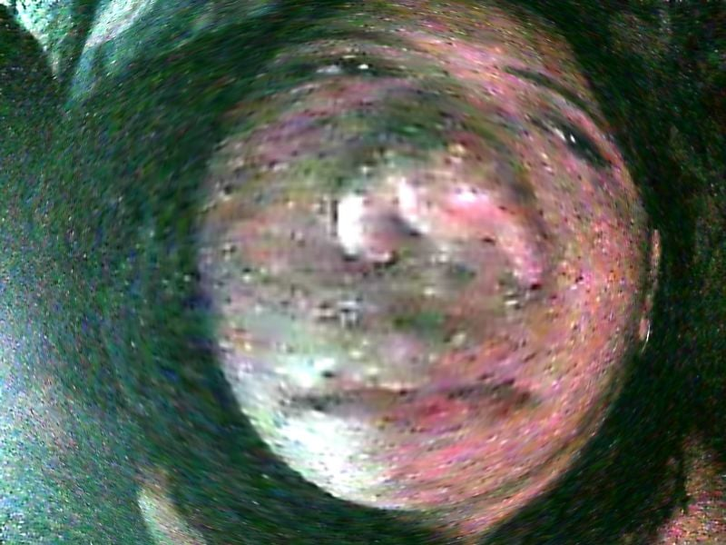

Starry Night by Vincent van Gogh

Van Gogh's Starry Night is one of the most most famous paintings in post-impressionist culture. It is currently on display at the Museum of Modern Art in New York. Unlike most of Dutch artist's paintings, Starry Night was painted from memory. At that time, Van Gogh was in the hospital of Saint-Remy, tormented by fits of madness.
Mona Lisa by Leonardo da Vinci

Probably the most famous painting in the world is Leonardo da Vinci's La Gioconda, better known as Mona Lisa. This painting is a portrait of Madame Gherardini, personifying the ideal woman of the Renaissance. They tried to damage the painting more than once, and in 1911 it was also kidnapped, returning only 2 years later. Admiration for it truly knows no bounds: Napoleon Bonaparte even removed it from the museum and ordered to hang it in his own bedroom. The painting is officially declared priceless, which is not surprising, as this masterpiece is the best art of all time. The only existing price is its $ 3 billion insurance. Mona Lisa is currently kept in the Louvre, Paris.
The Last Supper by Leonardo da Vinci

For more than 500 years of its existence, the famous fresco The Last Supper has been restored at least five times, and the last restoration took 21 years. This fresco by the great Leonardo depicts Jesus' last supper before his betrayal, arrest and death. In addition to composition, shapes and colors, discussions of this fresco are replete with theories about hidden symbols and the presence of Mary Magdalene next to Jesus. As one of the famous art pieces, this important art asset is located in the Santa Maria delle Grazie monastery in Milan.
The Birth of Venus by Sandro Botticelli

Another of the most famous paintings is The Birth of Venus. Botticelli's painting illustrates the myth of the birth of Aphrodite. The beautiful goddess drifts to the shore in a sea shell, driven by the Zephyr's wind (West wind), and on the shore she is met by one of the Graces. The Birth of Venus is well preserved thanks to the fact that Botticelli applied a protective layer of egg yolk to the painting. This masterpiece is kept in Florence in the Uffizi Gallery.
The Creation of Adam by Michelangelo Buonarroti

Michelangelo's fresco The Creation of Adam, which adorns the ceiling of the Sistine Chapel in the Vatican Palace, is the fourth of the nine famous art pieces of the central composition dedicated to scenes from the Book of Genesis. The fresco illustrates an episode of the first human being creation by God. In addition to depicting ideal human forms, the fresco is one of the first attempts in the history of art to depict the God himself.
Thank you for visiting my website⋆. 𐙚 ˚❀⋆.ೃ࿔*:･
Facebook